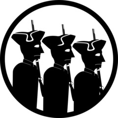

MTF Delta-4 “Minutemen”
Task Force Mission: Mobile Task Force Delta-4 is a rapid response task force, specializing in being the first deployed to a scene. They’re tasked with establishing a perimeter and assessing the situation, as well as providing additional manpower to other task forces when they arrive.